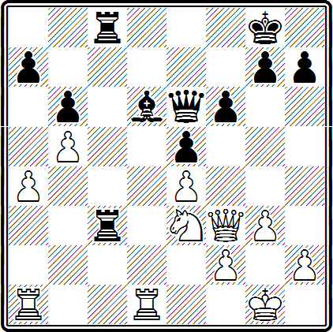
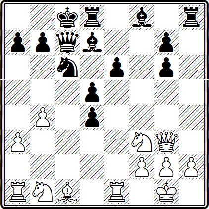
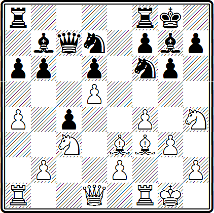
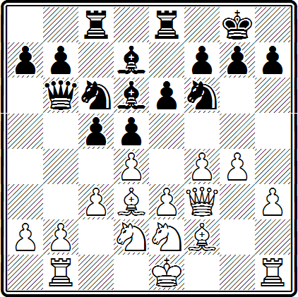

Фигура, занимающая обеспеченную позицию в центре, может служить постоянной причиной различных затруднений для противника.
В самом деле, прежде всего боевая сила такой фигуры (характеризуемая количеством полей, находящихся под ее ударом), как правило, больше, чем фигуры, находящейся за пределами центра. Например, слон держит под ударом максимальное для него количество полей(13) только занимая позицию в центре, а конь (8) — находясь в пределах расширенного центра.
Но дело не только в количестве ударов. Конь не является дальнобойной фигурой, но, когда он находится в центре, ему достаточно одного хода, чтобы взять под обстрел самые отдаленные поля на различных частях доски. Из центра он всегда быстро успеет к тому участку сражения, где требуется поддержка.
Однако, централизованная фигура — большая сила не сама по себе, а лишь во взаимодействии с другими своими фигурами.
Это положение получилось в партии Рети-Карльс (Баден-Баден, 1926 г.). Последний ход черных был 26... Kd4. Спору нет, приятно иметь в центре надежно защищенную фигуру, которую противник не может прогнать пешками. Но беда черных в том, что сам по себе их конь на d4 белым не опасен, а развернуть какие-либо активные действия они не могут. Иные возможности у белых: они угрожают в нужный момент вскрыть линию «h» и ворваться по ней тяжелыми фигурами. Дальнейшее течение партии чрезвычайно поучительно.
27. Ке2—с3 . . .
Понятно, что белый конь направляется на «соответствующий» центральный пункт — d5, причем вовсе не бездействующим наблюдателем: он будет помогать тяжелым фигурам, готовящимся к вторжению.
27. . . . Лf8—b8
Предвидя вскрытие линии «h», черные мобилизуют свои тяжелые фигуры, но у них мало пространства для того, чтобы успешно защищаться.
28. Лb1—b3 . . .
Типичный прием. Белые не сразу вскрывают линию «h» а предварительно сосредоточивают на ней тяжелые фигуры.
28. . . . Лb8—g8
29. Лb1—h1 Фd7—d8
30. КсЗ—d5 . . .
Конь успевает весьма кстати. Находясь в центре, он создает угрозу флангу. Бездействовать черным нельзя. Грозит прямолинейный маневр: 31. Крf1, а затем 32. hg hg 33. Фh2 Л:h3 34. Ф:h3 Лh8 35. Ф:h8+ Ф:h8 36. Л:h8 Кр:h8 37. К:f6 с легким выигрышем.
30. . . . g5:h4
31. Лh3:h4 Kpg7—f7
32. Kpg2—f2 Ф68—f8
33. Лh4:h6 Лh8:h6
34. Лh1:h6 Фf8—g7
35. Фd2—a5
Черные сдались.
Красив заключительный ход. Фигуры противника отвлечены на королевский фланг, а гибель приходит с другой стороны.
Роль коня на d5 в матовой атаке особенно важна. Централизованный черный конь не принял в напряженных событиях решительно никакого участия.
Вот еще пример на эту тему.
Ионер — Кон
Карлсбад, 1911 г.
33. . . . Cd6—с5
Полезно обратить внимание на то, как черные централизуют своего слона.
34. Ла1—c1 Сс5—d4
35. Лс1:с3 Лс8:с3
36. Фf3—е2 Фе6—b3
37. Ке3—d5 Ле3—с5
38. Фе2—g4 Kpg8—f8
Внимательно рассмотрев позицию, изображенную на диаграмме, мы придем к выводу, что, несмотря на блестящее, казалось бы, положение коня на d5 (такого коня называют иногда «вечным», имея в виду невозможность для противника избавиться от него без материальных потерь), дела белых очень плохи. Централизованный черный слон активно помогает своим тяжелым фигурам.
39. Лd1—f1
Ладья находилась под ударом, и белый ферзь был скован. Поэтому белые уводят ладью и одновременно лишний раз защищают пункт f2.
Однако это не приносит им большого облегчения.
39. . . . Фb3:а4
40. Фg4—d7 Фа4:b5
41. Фдd—е7+ Kpf8—g8
42. Фе7—е6+ Kpg8—f8
43. Феб—е7+ Kpf8—g8
44. Фе7—е6+ Kpg8—h8
Черные два раза повторили ходы. Возможно, это объясняется нехваткой времени на обдумывание и, во всяком случае, не имеет существенного значения.
45. h2—h4 . . .
Ладья белых не может принять участия в атаке, и это их губит.
45. . . . Фb5—с6
46. Фе6—f7 Фе6—с8
47. h4—h5 Фс8—g8
48. Фf7:а7 Фg8—f8!
49. Kpg1—g2 . . .
Пешку b6 нельзя брать ферзем из-за удара Лс5:d5, но сомнительно ее брать и конем из-за неприятной связки.
49. . . . f6— f5
Вот, оказывается, как можно «выбить» такого «вечного» коня — надо подорвать его опору.
50. Kd5—е7 . . .
Если бы белые захотели удержать пешку е4 путем 50. f3, то могло бы последовать: 51... fe, и нельзя 52. fe из-за 52... Лс2+.
50. . . . f5:е4
51. Лf1—h1 Лс5—с2
52. Kpg2—h3 Лс2:f2
53. h5—h6 g7:h6
Белые сдались.
Важно суметь занять центр пешками, но существуют позиции, где можно обходиться без пешечного центра. Обычно это относится к положениям, в которых удается получить для фигур удобные опорные пункты в центре и развить сильное давление на пешечный центр противника. Иногда в таких случаях употребляют выражение «фигурный центр».
Несколько десятилетий назад А. Нимцович охотно применял старое продолжение во французской защите, а именно после 1. е2—е4 е7—е6 2. d2—d4 d7—d5 ход 3. e4—e5.
Это продолжение находило в общем мало приверженцев: после подрывных ходов с7—с5 и f7—f6 белым очень трудно удерживать пешечный центр. Однако Нимцович охотно менял пешки — d4:с5 и е6:f6, а затем освободившиеся поля d4 и е5 занимал фигурами. Таким образом он заменял пешечный центр фигурным.
В статье «Сдача центра — предрассудок», опубликованной в 1913 году, А. Нимцович писал: «Для образования центра, конечно, более всего пригодны пешки, потому что они наиболее устойчивы; однако фигуры, расположенные в центре, могут с успехом их заменить».
Идею фигурного воздействия на центр практически осуществлял, применяя собственные дебютные построения, М. И. Чигорин.
В настоящее время многие мастера охотно играют новые, появившиеся лишь за последние десятилетия, дебюты, в которых воздерживаются от немедленного занятия центра своими пешками. К ним относятся, например, староиндийская защита, защита Грюнфельда, дебют Ре-ти, защита Алехина и другие.
Французская защита
Нимцович — Сальве
Карлсбад, 1911 г.
Примечания к этой партии, заключенные в кавычки, принадлежат А. Нимцовичу (Н) и Р. Рети (Р.).
1. е2—е4 е7—е6
2. d2—d4 d7—d5
3. e4—e5 c7—c5
4. c2—с3 Kb8—с6
5. Kg1—f3 Фd8—b6
6. Cf1—d3 . . .
В настоящее время чаще играют 6. а2—а3.
6. . . . Сс8—d7
Конечно, попытка выиграть пешку (6... cd 7. cd К:d4) была бы грубейшей ошибкой, после 8. К:d4 Ф:d4 9. СЬ5+ черные теряют ферзя. Лучшим считается 6... cd 7. cd Cd7 (теперь черные уже по-настоящему угрожают взять на d4) 8. Се2 Kge7 и затем Kf5 с давлением на пешку d4.
7. d4:с5 Cf8:с5
8. 0—0 f7—f6
«Черные торжествуют и стремительно бросаются на последнего представителя некогда славной пешечной цепи, чтобы уничтожить его. Их боевой лозунг: «дорогу пешке е6!». Дальнейшее течение партии не оправдывает, однако, их надежд» (Н.).
9. b2—b4 . . .
Чтобы после Сс1—f4 пешка Ь2 не была под ударом.
«Ход 9. Фd1—е2 тоже был бы защитой, но непродолжительной, потому что последовал бы размен 9... fe 10. К:е5 К:е5 11. Ф:е5 Kf6, после чего черным было бы нетрудно оттеснить блокирующего ферзя» (Н.).
9. . . . Сс5—е7
10. Cc1—f4 f6:e5
11. Kf3:е5 Кc6:е5
12. Сf4:е5 . . .
«Белые выполнили свой план. Их пешечная цепь в центре исчезла, но пункты d4 и е5 — в их руках, и черные пешки d5 и е6, несмотря на снятие механического зажима, по-прежнему блокированы. В дальнейшем Нимцович устремляет действие всех своих фигур на эти стратегические поля: d4 и е5, особенно на второе из них, наиболее важное, так как оно глубже врезается в лагерь черных» (Р.).
12. . . . Kg8—f6
13. Кb1—d2 0—0
14. Kd2—f3 Се7—d6
15. Фd1—е2 Ла8—с8
16. Се5—d4 ФЬб—с7
17. Kf3—е5 . . .
Белые искусно используют пункты d4 и е5 для своих фигур.
17. . . . Cd7—е8
18. Ла1—e1 Cd6:е5
19. Cd4:е5 Фс7—с6
20. Се5—d4 Се8—d7
21. Фе2—с2 Лf8—f7
22. Ле1—е3 b7—b6
23. Ле3—g3 . . .
«Зажатие центра, препятствующее согласованию действий, разъединенных на двух флангах сил черных, создает почву для атаки белых на фланге, быстро увенчивающейся успехом». (Р.).
23. . . . Kpg8—h8
У черных уже нет удовлетворительной защиты.
24. Cd3 : Ь7
Решающее преимущество достигнуто. Черные не могут играть 24... К:h7 из-за 25. Фg6 с немедленным выигрышем ввиду ряда сильнейших угроз (26. С:g7+, 26. Ф:f7, 26. Лh3).
24. . . . е6—е5
Наконец-то центральная пешка двинулась, но слишком поздно.
25. Ch7—g6 Л17—е7
26. Лf1—e1 Фc6—d6
27. Cd4—е3 d5—d4
28. Се3—g5
Слоны белых очень сильны.
28... Лс8:с3 29. Лg3:с3 d4:с3 30. Фс2:с3 Kph8—g8 31. а2—аЗ Kpg8—f8 32. Cg5—h4 (с угрозой Ch4—g3) 32... Cd7—e8 33. Cg6—f5 Фd6—d4.
Эндшпиль после размена ферзей безнадежен для черных, но при ферзях их шансы не лучше.
34. Фе3:d4 е5:d4 35. Ле1:е7 Kpf8:е7 36. Cf5—d3 Кре7—d6 37. Ch4:f6 g7:f6 38. Kpg1—f1 Ce8—с6 39. h2—h4. Черные сдались.
Руденко — Быкова
Ленинград, 1953 г.
У черных 3 (1) центральные пешки, у белых ни одной. Значит ли это, что позиция черных лучше? Нет: белые захватывают своими фигурами важнейшие пункты в центре (е5 и d4), линии, создают сильнейшее давление и развивают победоносную атаку.
15. Cc1—f4 Фс7—b6
16. Kf3—е5 Кc6:е5
17. Cf4:е5 Cf8—е7
18. Кb1—d2 . . .
Как и в предыдущем примере, конь стремится на f3, чтобы держать под контролем ключевые пункты d4 и е5.
18. . . . Се7—f6
19. Ла1—c1+ Cd7—сб
20. Kd2—f3 d4—d3
21. Ле1—d1 Kpc8—d7
22. Лd1:d3 Лh8—h6
23. Лd3—с3 Лd8—e8
Не помогает 23... а6 ввиду 24. Kd4 Лс8 25. Фе3 Лf8 26. Л:с6 bс 27. Л:с6 Фb7 28. Лс7+ Ф:с7 29. С:с7, и белые выигрывают.
24. Kf3—d4 . . .
Белые владеют опорными пунктами в центре, они захватили открытую линию «с». От двух угроз — 25. Ь5 и 25. К:с6 bс 26. Л:с6 Ф:с6 27. Л:с6 Кр:с6 28. Фс3+ нет защиты.
24. . . . Ле8—f8
Защищаясь кое-как от второй угрозы, но допуская выполнение первой.
25. b4—b5 Сf6:е5
26. b5:с6+ b7:с6
27. Фg3:е5 . . .
Теперь все кончено — у белых лишняя фигура. Еще последовало: 27... Лf6 28.Л:с6 Фb2 29. Фd6+ Кре8 30. Лс8+ Kpf7 31. Фf8Х.
Известно правило, почерпнутое из практики: «атака на фланге принесет успех лишь тогда, когда противник не имеет превосходства в центре, либо когда центр заперт».
Это правило, как, впрочем, и другие в шахматной теории, не следует понимать как абсолютно справедливое для всех случаев, но оно действует в значительном большинстве позиций.
В предыдущих главах можно было видеть случаи успешной фланговой атаки при захваченном или неподвижном центре.
Однако немало примеров можно найти в партиях даже крупных шахматистов, когда фланговая атака оказывается неудачной вследствие необеспеченности центра.
Алехин — Капабланка
Нью-Йорк, 1927 г.
У черных большое позиционное преимущество, и они могут ближайшими ходами создать сильнейшее давление на центр. Пешка d5 может стать слабой. Алехин не хотел безучастно наблюдать за развитием событий и бросил в наступление свои фланговые пешки. Тогда Капабланка захватил центр, и слабости в расположении белых стали ощутимыми.
17. g3—g4 . . .
Объективно это фланговое продвижение при необеспеченном центре еще больше ослабляет лагерь белых, но нежелание Алехина играть пассивно понятно.
17. . . . Kd7—с5
Конь доставит белым много неприятностей, но избавиться от него непросто. На 18. С:с5 последует 18... Ф:с5+, затем 19... b5, и угроза b5—b4 очень сильна.
18. g4—g5 Kf6—d7
19. f4—f5 . . .
Наступление на фланге продолжается, но этот ход отдает черным в полное владение важнейший центральный пункт е5. Попытка разменять неприятельского слона g7 посредством 19. Cd4? приводила после 19... С:d4+ 20. Ф:d4 Кb3 к потере качества.
19. . . . Лf8—е8
Позиционное преимущество черных стало огромным. Значение захвата центральной вертикали «е», центральной диагонали a1—h8, центрального пункта е5 и других важных пунктов не нуждается в подробном пояснении. Интересно проследить, как это позиционное преимущество превращается в материальное. Первой жертвой оказывается пешка d5.
20. Се3—f4 Cg7—е5
Конечно, черные не должны позволить запереть своего слона ходом 21. f6.
21. Cf3—g4 Кс5—b3
22. f5:g6 h7:g6
23. Лa1—b1 Ce5:c3
Чтобы выиграть пешку d5.
24. b2:с3 Фс7—с5+
25. е2—е3 Kd7—е5
26. Cg4—f3 Ке5—d3!
Это сильнее, чем 26... К:f3+ 27. К:f3 С:d5, что позволяло белым после 28. Kd4 несколько консолидировать свою позицию.
27. Kpg1-h1 . . .
На 27. Л:b3 последовал бы ответ 27... К:f4.
27. . . . Сb7:d5
Итак, черные добились материального превосходства. Но дело не столько в лишней пешке, сколько в том, что вообще позиция белых разбита и вся центральная часть доски переходит во власть черных.
28. Лb1:b3
Плохо было 28. С:d5; как нетрудно убедиться, не годилось и 28. С:d6.
28. . . . Kd3:f4
29. Лb3—b1 Ле8:е3
Вторая центральная пешка белых погибла.
30. Kh4—g2 Ле3:f3
Так черные выигрывают третью пешку.
31. Лf1:f3 Kf4:g2
32. Kph1:g2 Ла8—e8
33. Kpg2—f1 Cd5:f3
34. Фd1:f3 Фс5:g5
На b6 брать нельзя, последовало бы 35... Фс1+ 36. Kpg2 Фd2+ с немедленным выигрышем.
35. Лb1—e1
и через несколько ходов белые сдались.
Алапин — Берн
Карлсбад, 1911 г.
Своим последним ходом 18. g2—g4 белые начали наступление на фланге. Эта стратегия опровергается замечательным ударом в центре, хотя на первый взгляд у белых там все в порядке и никаких прорывов не предвидится.
18. . . . е6—е5!
19. d4:е5 Ле8:е5!
20. g4—g5 . . .
Если 20. fe, то 20... К:е5 с сильнейшей атакой.
20. . . . Kf6—е8
21. f4:е5 . . .
Белые решают получить хотя бы материальную компенсацию; если не брать ладью, то она может отступить на е7, и черные все равно сохранят инициативу.
21. . . . Кc6:е5
22. Cd3:h7+ . . .
Слон все равно обречен на гибель.
22. . . . Kpg8:h7
23. Фf3—h5+ Kph7—g8
24. Ke2—f4 Cd7—f5
У белых много слабостей, фигуры черных в центре занимают сильные позиции. Если белая ладья теперь отступит с поля b1, то последует, конечно, 25... Ф:b2, и позиция белых совсем разрушается.
25. Фh5—d1 Ке5—d3+
26. Kf4:d3 Cf5:d3
27. Kd2—f3 c5—c4
Необходимо удержать слона на сильной позиции: он препятствует рокировке. Правда, противник получает пункт d4 для коня, но без взаимодействия с другими фигурами и централизованный конь не опасен. Центр белых представляет собой жалкое зрелище: пешка еЗ оказывается слабой, ход 28. е4 плох хотя бы из-за 28... Cg3.
28. Kf3—d4 Cd6—e7
Освобождая «транзитное» поле коню, направляющемуся в центр.
29. Фd1—g4 Ке8—d6
30. Cf2—g3 Лс8—d8
31. Cg3:d6 Ce7:d6
Белым удалось разменять опасного коня, но дорогой ценой: пешка е3 теперь лишилась поддержки и становится катастрофически слабой.
32. Kpe1—d2 Cd7—с5
33. h3—h4 . . .
Белые ищут шансы во фланговом наступлении, но новые удары черных по центру лишают их надежды на спасение.
33. . . . Лd8—е8!
Снова центральная стратегия против фланговой.
34. h4—h5 f7-f5!
35. Фg4—f4
Возможно, что 35. gf было несколько лучше, хотя после 35... Ф:f6 черные сохраняли сильную атаку.
35. . . . Сс5—d6
36. Фf4—f2 f5—f4!
Подрыв центральной пешки фактически завершает партию.
37. е3:f4 Ле8—е4!
Этим централизующим ходом черные «добивают» противника, от С:f4+ нет удовлетворительной защиты. Остальное — агония.
38. Лh1—h4 Cd3:b1
39. Kpd2—c1 Cb1—d3
40. b2—b4 c4:b3
41. a2:b3 Фb6—а5
Белые сдались.